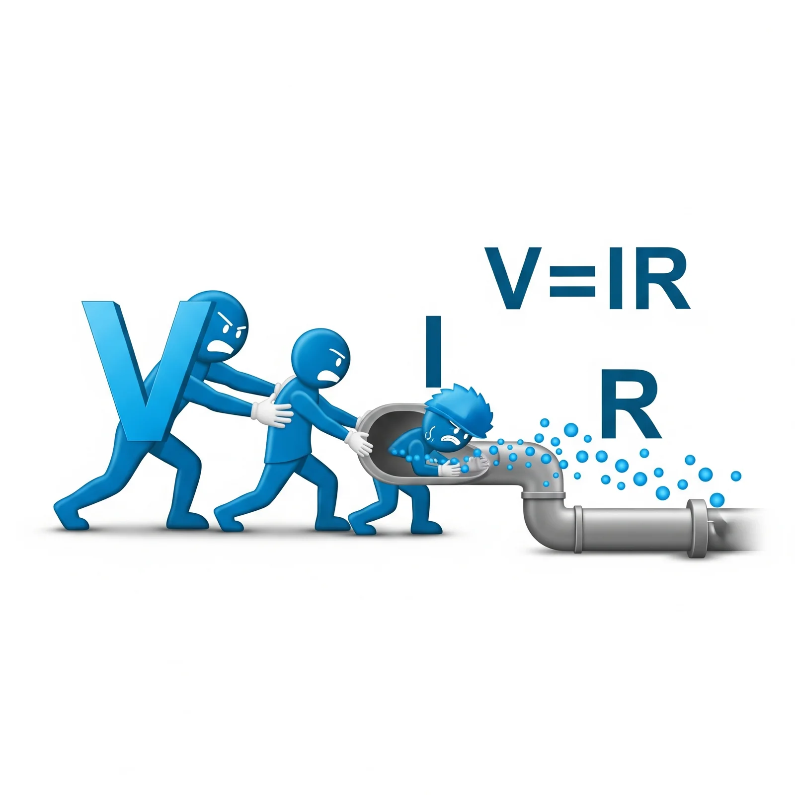
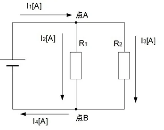
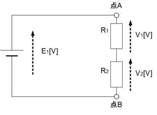
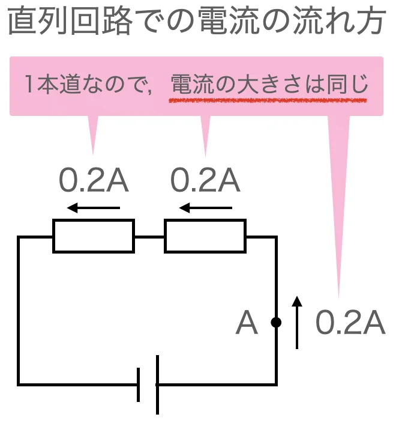
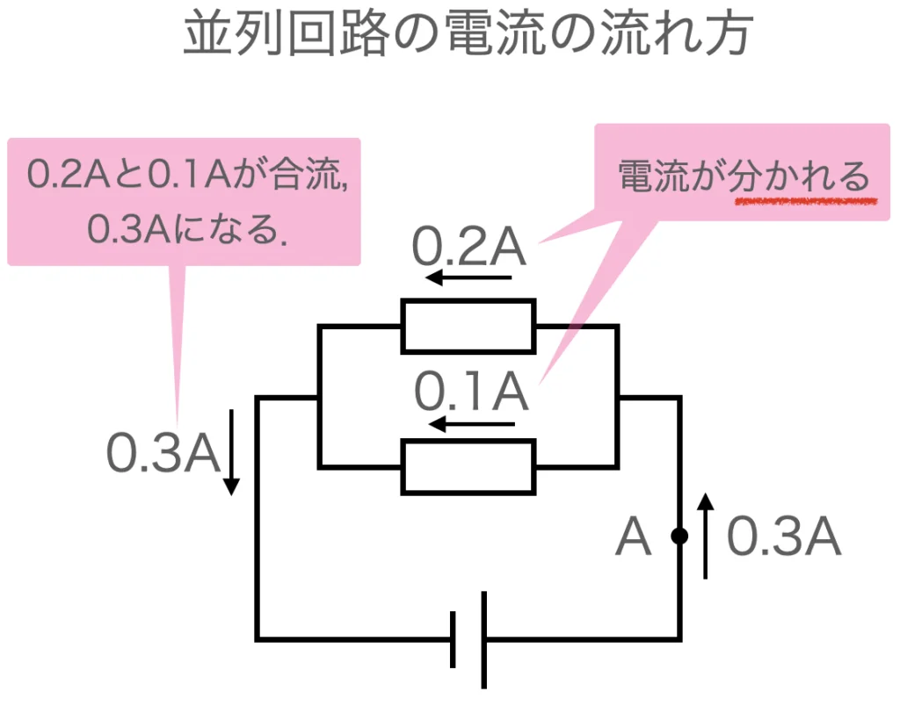
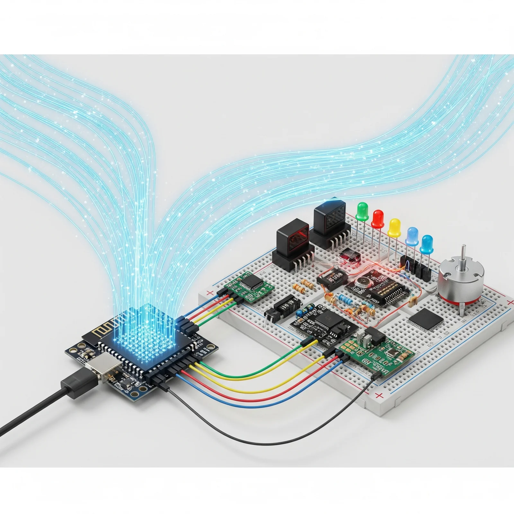
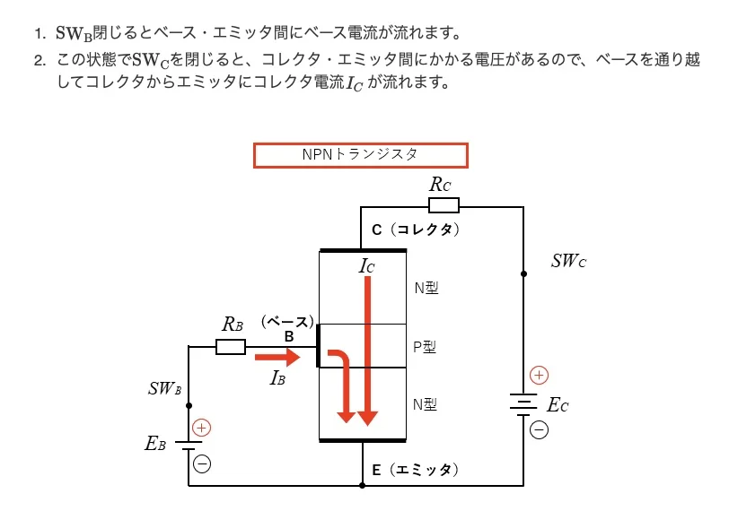

電子工作では、この法則を使って回路の動作を予測し、安全な回路を設計します。
ゲオルク・ジーモン・オーム（1789-1854）は、ドイツの物理学者・数学者で、電気学の基礎を築いた人物です。
オームは1820年代に、電気回路における電圧、電流、抵抗の関係を精密に実験しました。当時はまだ電気学が未熟な分野であり、安定した電源や測定器具がない中での研究でした。
オームの法則は、現代のすべての電気・電子技術の基礎となっています。彼の名前は電気抵抗の単位「オーム（Ω）」として不滅に刻まれています。
「任意の節点（ノード）において、流入する電流の総和と流出する電流の総和は等しい」
$$\sum I_{in} = \sum I_{out}$$
または、節点に集まるすべての電流の代数和は0です。 $$\sum I = 0$$

$$I_1 = I_2 + I_3 = I_4$$
「任意の闉回路（ループ）において、電圧の総和は0である」
$$\sum V = 0$$

$$E_1 = V_1 + V_2$$
オームの法則と組み合わせることで、どんな複雑な電気回路でも解析できます。
グスタフ・ロベルト・キルヒホッフ（1824-1887）は、ドイツの物理学者で、電気学と分光学の分野で大きな貢献をしました。
キルヒホッフは21歳の時に、電気回路の基本法則を発見しました。彼の法則は、オームの法則と並んで電気学の基礎を形成し、現代の電気・電子工学の土台となっています。
直列接続は、部品を一列につなげて、電流が一つの経路しか通らないようにした接続方法です。

並列接続は、部品を並べてつなげて、電流が複数の経路に分かれるようにした接続方法です。

| 項目 | 直列接続 | 並列接続 |
|---|---|---|
| 電流 | 全部品で同じ | 各部品で異なる |
| 電圧 | 各部品で異なる | 全部品で同じ |
| 全体抵抗 | 各抵抗の合計 | 各抵抗より小 |
| 故障時 | 全体停止 | 他は継続動作 |
| 電力消費 | 各部品の合計 | 各部品の合計 |
| 制御 | 一括制御 | 個別制御 |
実際の電子回路では、直列と並列を組み合わせた複合回路が一般的です。この場合、キルヒホッフの法則やオームの法則を使って段階的に解析します。
直列と並列の特性を理解することで、効率的で安全な電子回路を設計できます。
抵抗は、電流を制御する基本的な部品です。抵抗値は、電流が通過する難易度を表し、抵抗値が高いほど電流が流れるのが難しくなります。
抵抗値は、電流が通過する難易度を表し、抵抗値が高いほど電流が流れるのが難しくなります。
コイル（インダクタ）は、電線をらせん状に巻いた部品で、磁気エネルギーを蓄える性質を持ちます。交流電流の変化に対して抵抗し、直流に対してはほぼ無抵抗です。
コイルは、電気エネルギーを磁気エネルギーとして一時的に蓄えることで、様々な電気的機能を実現します。
コンデンサ（キャパシタ）は、2枚の導体板を絶縁体で挿んだ構造の部品で、電気エネルギーを蓄える性質を持ちます。直流を通さず、交流に対しては周波数に反比例したインピーダンスを示します。
コンデンサは、電気エネルギーを電界エネルギーとして蓄えることで、電気回路における様々な機能を実現します。
半導体の電気的性質を理解するために、まず物質の電気的性質を考えてみましょう。物質は電気の流れやすさによって、3つのグループに分けられます。
半導体では、電気を運ぶ「運び屋さん」が2種類います。
正孔は実際には空っぽですが、電子が次々と移動してくることで、まるでプラスの電気が動いているように見えます。
半導体の性質を変えるために、純粋なシリコンに少しだけ他の原子を混ぜます。これを「ドーピング」と呼びます。
シリコンにリンやヒ素を混ぜると、余った電子が生まれます。この電子が電気を運ぶ主役になります。「n」は「negative（マイナス）」の意味です。
シリコンにホウ素やアルミニウムを混ぜると、電子が不足して正孔が生まれます。この正孔が電気を運ぶ主役になります。「p」は「positive（プラス）」の意味です。
p型とn型の半導体をくっつけると、接合面で面白いことが起こります。n型からの電子とp型からの正孔が出会って、お互いに打ち消し合います。すると、接合面には電気を運ぶものがいない「空っぽの層」ができます。
この接合面に電気をかけると、不思議なことが起こります。
この「一方通行」の性質が、ダイオードの基本的な働きです。まるで電気の「逆止弁」のような働きをします。
極薄の絶縁層では、古典的には不可能な電子の通過が量子力学的に可能になります。このトンネル効果は、トンネルダイオードやフラッシュメモリに応用されています。
ナノスケールの半導体構造では、電子や正孔が空間的に閉じ込められ、エネルギーレベルが離散化します。この量子閉じ込め効果は、量子ドットレーザーや量子ビットの基礎となっています。
半導体は、量子力学の原理に基づいた精密な制御により、現代電子技術の基盤を形成しています。
ダイオードは、pn接合の整流作用を利用した最も基本的な半導体素子で、電流を一方向にのみ流す性質を持ちます。順方向（アノードを正、カソードを負）では約0.7V（シリコン）の電圧降下で電流が流れ、逆方向では電流をほぼ遮断します。電子工作では整流回路、電圧安定化、逆流防止などに使用されます。
LED（発光ダイオード）は、pn接合で電子と正孔が再結合する際に光エネルギーを放出する特殊なダイオードです。使用する半導体材料によって発光色が決まり、赤色（GaAsP）、緑色（GaP）、青色（GaN）などがあります。低消費電力、長寿命、高効率という特徴から、表示装置、照明、光通信など幅広い分野で活用されています。電子工作では状態表示、イルミネーション、センサー光源として重要な部品です。
ダイオードとLEDは、pn接合の特性を利用した半導体素子で、電子工作における重要な部品です。ダイオードは整流回路や電圧安定化に、LEDは発光素子や表示デバイスとして使用されます。両者の特性を理解することで、電子回路の設計や応用が可能になります。
トランジスタは、3つの端子を持つ半導体素子で、増幅とスイッチングの2つの基本機能を持つ現代電子技術の中核部品です。小さな入力信号で大きな出力を制御できる特性により、コンピュータから家電製品まで、あらゆる電子機器に使用されています。
バイポーラトランジスタ（BJT）は、エミッタ、ベース、コレクタの3端子を持ち、ベース電流によってコレクタ電流を制御します。npn型とpnp型があり、電流増幅率（hFE）は通常50～300程度です。ベース-エミッタ間の約0.7Vの電圧で動作し、アナログ増幅回路やスイッチング回路に適しています。電子工作では音声増幅、LED駆動、リレー制御などに使用されます。
電界効果トランジスタ（FET）は、ゲート、ソース、ドレインの3端子を持ち、ゲート電圧によってソース-ドレイン間の電流を制御します。MOSFET（金属酸化膜半導体FET）が最も一般的で、入力インピーダンスが非常に高く、高速スイッチングが可能です。消費電力が少なく、デジタル回路やパワーエレクトロニクスに適しています。電子工作ではモーター制御、電源スイッチング、高周波回路などに使用されます。
トランジスタの理解は、アナログ回路とデジタル回路の両方において電子工作の基礎となる重要な知識です。
集積回路（IC：Integrated Circuit）は、1つのチップ上に数百万から数十億個のトランジスタを集積した半導体デバイスで、現代電子工作の中核を成す部品です。1958年にジャック・キルビーによって発明されたICは、電子機器の小型化・高性能化を飛躍的に進歩させ、コンピュータから家電製品まで、あらゆる電子機器に不可欠な存在となっています。
オペアンプ（演算増幅器）は、理想的には無限大の増幅率を持つアナログICで、電子工作で最も頻繁に使用される部品の一つです。反転入力と非反転入力の2つの入力端子を持ち、その電圧差を増幅して出力します。外部回路との組み合わせにより、増幅回路、フィルタ回路、比較回路、発振回路など多様な機能を実現できます。代表的なLM358やNE5532などは、音声増幅、センサー信号処理、アクティブフィルタなどに広く使用されています。高入力インピーダンス、低出力インピーダンスという特性により、信号の劣化を最小限に抑えた回路設計が可能です。
ロジックICは、デジタル信号（0と1）を処理する集積回路で、論理演算（AND、OR、NOT、XORなど）を実行します。TTL（Transistor-Transistor Logic）やCMOS（Complementary Metal-Oxide-Semiconductor）などの技術により実現され、74シリーズ（74HC00、74HC08など）が代表的です。これらは論理ゲート、フリップフロップ、カウンタ、デコーダなどの基本的なデジタル回路を構成し、マイコンとの組み合わせでより複雑なデジタルシステムを構築できます。電子工作では、LED表示制御、モーター駆動回路、通信インターフェースなどに活用されています。
タイマーICの代表格である555タイマーは、1972年に開発された汎用タイマーICで、現在でも電子工作で広く使用されています。内部に比較器、フリップフロップ、出力段を内蔵し、外部の抵抗とコンデンサの組み合わせで動作時間を設定できます。モノステーブル（ワンショット）、アステーブル（発振）、バイステーブル（フリップフロップ）の3つの動作モードを持ち、LED点滅回路、PWM信号生成、時間遅延回路、発振回路などに応用できます。シンプルな構成でありながら高い汎用性を持つため、初心者から上級者まで幅広く愛用されている定番ICです。
ICの活用により、複雑な回路を簡単に実現でき、電子工作の可能性が大幅に広がります。各ICの特性を理解し、適切に組み合わせることで、高機能な電子システムを効率的に構築することができます。
マイクロコントローラー（マイコン）は、CPU、メモリ、入出力インターフェースを一つのチップに統合した小型コンピュータで、プログラムによって様々な制御や処理を実行できます。組み込みプログラミングでは、限られたリソースの制約下で、リアルタイム性、信頼性、省電力性を実現する特殊なプログラミング手法が求められます。
アセンブラは、マイコンの機械語に最も近い低レベルプログラミング言語で、CPUの命令セットを直接操作することで、最高の実行効率とハードウェア制御を実現できます。アセンブラプログラミングは、メモリ使用量の最小化、リアルタイム処理、特殊なハードウェア機能の活用などが必要な場面で特に有効です。一方で、学習コストが高く、開発効率が低いというデメリットもあります。
C言語は、組み込みプログラミングの事実上の標準言語として幅広く使用されている高級プログラミング言語で、アセンブラと高級言語の中間的な位置づけです。C言語の特徴は、ハードウェアに近い低レベルな操作が可能でありながら、可読性と保守性に優れ、ポータビリティが高いことです。マイコンプログラミングでは、レジスタ操作、割り込み処理、タイマー制御、通信プロトコル実装などの様々な機能を効率的に実装でき、多くのマイコンメーカーが公式にサポートしています。
PICマイコンは、マイクロチップ社が開発した代表的なマイコンファミリーで、特に組み込みシステムや電子工作の分野で幅広く使用されています。PICマイコンの特徴は、シンプルなアーキテクチャ、低消費電力、豊富な周辺機能（PWM、ADC、UARTなど）で、初心者から上級者まで幅広いユーザーに支持されています。PIC16F84A、PIC18F4550などの人気機種は、LED制御、センサーデータ収集、モーター制御などの基本的な電子工作プロジェクトに最適です。プログラミングは主にC言語やアセンブラで行われ、MPLAB X IDEやXCコンパイラなどの無料開発環境が提供されています。
Arduinoは、2005年にイタリアで開発されたオープンソースのマイコンボードで、電子工作の民主化を進めた革命的なプラットフォームです。Arduino IDE、豊富なライブラリ、コミュニティサポートが特徴で、C/C++ベースの簡略化言語とsetup()・loop()関数により初心者でも学習しやすく、IoT、ロボティクス、ホームオートメーションで広く活用されています。
Raspberry Piは、英国Raspberry Pi財団が開発したシングルボードコンピュータで、Linuxを実行できる本格的なコンピュータです。ARMプロセッサ、RAM、GPIO等を搭載し、Python、C/C++等の多様な言語に対応。高い計算能力とネットワーク機能により、AI・機械学習、コンピュータビジョンなどの高度なプロジェクトに適しています。
これらの技術を組み合わせることで、初心者は簡単なLED点滅から始まり、最終的には高度なIoTシステムやロボティクスプロジェクトまで実現できるようになります。マイコン・プログラミングの習得は、現代電子工作において不可欠なスキルであり、ハードウェアとソフトウェアの両方を理解することで、真に革新的な電子システムを構築することが可能になります。

バイポーラ接合トランジスタは、ベース（Base）、エミッタ（Emitter）、コレクタ（Collector）の三つの端子を持つ半導体素子です。これらの端子は、P型とN型の半導体を組み合わせた構造により形成されます。
P型半導体とは、純粋なシリコン結晶にホウ素（ボロン）やアルミニウムなどの3価原子を添加（ドーピング）した半導体で、電子が不足した状態（正孔またはホール）を持ちます。一方、N型半導体は、リンやヒ素などの5価原子をドーピングした半導体で、余剰な電子を持ち、電気伝導性が高い特性を持ちます。このドーピング技術により、半導体の電気的性質を精密に制御でき、トランジスタの動作を可能にしています。
NPNトランジスタは、N型半導体-P型半導体-N型半導体の順に配置された構造を持ちます。中央のP型半導体がベースとなり、両側のN型半導体がエミッタとコレクタを形成します。NPNトランジスタでは、エミッタからコレクタへ電子が流れることで電流が制御されます。
NPNトランジスタの動作は、ベース-エミッタ接合を順方向バイアス（約0.7Vの正電圧）で、ベース-コレクタ接合を逆方向バイアスで動作させることで実現されます。ベースに小さな正の電圧を印加することで、微小なベース電流（小信号用トランジスタで数十μA～数mA、パワートランジスタで数十mA～数百mA）によって、エミッタからの電子がベースを通ってコレクタへ流れる経路が開かれ、エミッタ-コレクタ間の大きな電流（小信号用トランジスタで数十mA～数百mA、パワートランジスタで数A～数十A）を制御できるため、電流増幅作用が得られます。直流電流増幅率（hFEまたはβ）は100～500程度ですが、大きいものでは1000程度になることもあります。 NPNトランジスタは、一般的に電源電圧が正の回路で使用され、スイッチング速度がPNPトランジスタよりも速い特徴があります。

PNPトランジスタは、P型半導体-N型半導体-P型半導体の順に配置された構造で、NPNトランジスタとは逆の極性を持ちます。中央のN型半導体がベースとなり、両側のP型半導体がエミッタとコレクタを形成します。PNPトランジスタでは、正孔（ホール）がエミッタからコレクタへ移動することで電流が制御されます。
PNPトランジスタの動作は、NPNトランジスタとは逆のバイアス条件で行われます。ベースに負の電圧（約-0.7V）を印加することで、エミッタからの正孔がベースを通ってコレクタへ流れる経路が形成されます。PNPトランジスタは、一般的に負電源回路やハイサイドスイッチング回路で使用され、NPNトランジスタと組み合わせることで、プッシュプル回路やコンプリメンタリ回路などの高性能なアナログ回路を構成できます。
トランジスタの基本動作は、ベース電流によってコレクタ電流を制御することです。ベースに流れる微小な電流（通常はマイクロアンペア～ミリアンペア）により、コレクタ-エミッタ間に流れる大きな電流（通常はミリアンペア～アンペア）を制御できます。この電流増幅率はhFE（直流電流増幅率）やβ（ベータ）と呼ばれ、通常50～500程度の値を持ちます。
トランジスタには能動領域、飽和領域、遮断領域の三つの動作領域があります。能動領域では線形増幅動作を行い、飽和領域ではスイッチのON状態、遮断領域ではOFF状態として機能します。また、トランジスタの重要な特性として、周波数特性、温度特性、雑音特性があり、これらは回路設計において重要な考慮要素となります。
バイポーラトランジスタと並んで重要なのが電界効果トランジスタ（FET）です。FETはゲート、ソース、ドレインの三端子を持ち、ゲート電圧によってソース-ドレイン間の電流を制御します。FETは入力インピーダンスが非常に高く、消費電力が少ないため、CMOS集積回路の基本素子として広く使用されています。
トランジスタは、増幅回路、スイッチング回路、発振回路、電源回路など、あらゆる電子回路の基本構成要素として使用されます。アナログ回路では信号増幅器、フィルタ、発振器として、デジタル回路では論理ゲート、メモリセル、マイクロプロセッサの基本素子として機能します。現代のマイクロプロセッサには数十億個のトランジスタが集積されており、コンピュータ、スマートフォン、IoTデバイス、自動車の制御システムなど、私たちの生活を支える電子機器の心臓部となっています。
電子工作においても、LED駆動回路、モータ制御回路、センサー信号処理回路など、様々な用途でトランジスタが活用されています。トランジスタの理解は、電子工作から最先端の集積回路設計まで、電子工学のあらゆる分野において不可欠な知識であり、現代技術社会の基盤を支える重要な技術です。